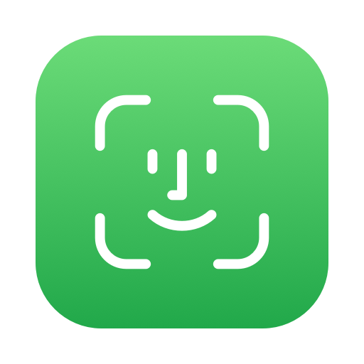
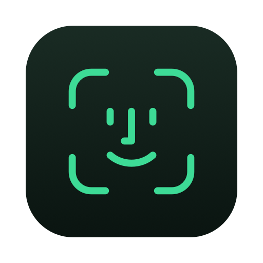

Ontgrendel je Mac
met een blik
Facey maakt van je camera een sleutel. Kijk naar je Mac en hij gaat open, net als je telefoon.
Download voor MacIn een oogwenk
Herkend in minder dan een seconde, zonder klikken. Ook als je terugkomt van koffie halen.
Blijft op je Mac
Geen foto's, geen cloud. Je gezichtsprofiel is versleuteld en verlaat je Mac nooit.
Het gewone vergrendelscherm
Facey werkt op het echte macOS-vergrendelscherm. Je wachtwoord en Touch ID blijven gewoon werken.
Facey gebruikt de camera van je Mac. Die meet geen diepte zoals de camera van een iPhone, dus een goede foto van je gezicht kan Facey misleiden. Zet in de app Knipperen vereist aan voor extra bescherming.